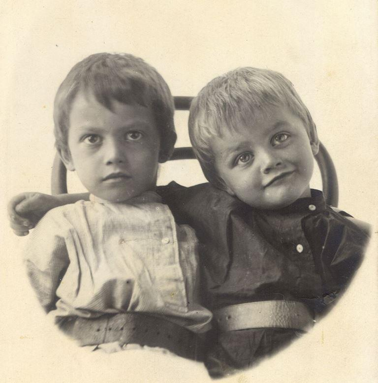 Alexander et son frère IvanLe 24 novembre 2020 marque le 100ème anniversaire de l'exécution à Simferopol d'Alexander Sergeevich Strakhov (17/30 septembre 1897 - 11/24 novembre 1920)1 .
Après sa disparition, sa famille a conservé sa mémoire et j'ai été prénommé ainsi d'après St. Grand-duc Alexandre Nevsky à la mémoire de « Sania » (comme ils continuaient à l'appeler d'une manière familiale. Je le savais depuis l'enfance.
Quand je suis né, d'Alexander Strakhov aurait eu 74 ans. Étant donné que son frère Ivan Strakhov (1899-1995) et sa sœur, ma grand-mère Nadezhda Strakhova (1905-2001), ont tous deux vécus jusqu'à 96 ans, il est permis de supposer qu’il aurait pu m’être donné le temps de communiquer avec lui à un âge assez conscient. Mais sa vie s'est terminée à 23 ans dans la tempête de la guerre civile et de la terreur révolutionnaire.
Ses parents étaient le prêtre orthodoxe Sergueï Ivanovitch Strakhov 2 (1867-1943) et la fille du célèbre marchand de la ville de Volokolamsk Philipp Nikolaevitch Volkov Evdokia (1875-1910), dont le frère Alexei était maire de la ville de Volokolamsk.
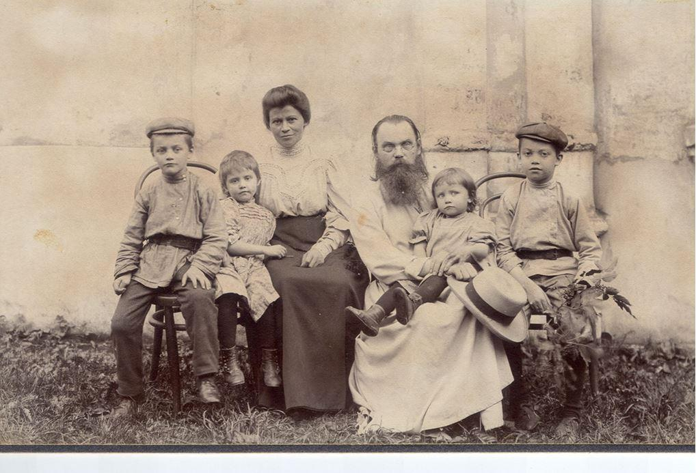
Le prêtre Sergueï Ivanovitch Strakhov et sa famille
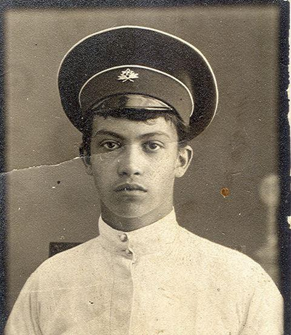Alexander est né à Klin au 17/30 septembre 1897 et il y a été baptisé dans l'église de la Dormition du Très Saint Théotokos.
En 1908, Sanya Strakhov entra dans le deuxième lycée de Moscou, situé dans l'ancien palais du comte Alexei Ivanovitch Musin-Pushkin sur Razgulyai, où, lors de l'incendie de Moscou en 1812, l'original "The Lay of Igor's Regiment", conservé dans la collection de manuscrits anciens, a été brûlé. Il étudie bien et reçoit chaque année des félicitations « pour ses excellentes réalisations et son comportement».
Le 20 avril / 3 mai 1910, la mère d'Alexandre Evdokia Strakhova décède d'une « maladie du bronze » à Yalta. Après avoir été transférée en l'église Sainte-Irène en 1914, la famille du prêtre S.I. Strakhova vivait au n ° 7, 2e Irininsky Lane.
Le père Sergiy est alors aidé à élever ses enfants par sa sœur Leonilla Strakhova qui avait une formation médicale.
Après avoir obtenu son baccalauréat en 1916, A.S. Strakhov est entré à l'école technique impériale de Moscou. Il était fasciné par la science et la technologie, et après lui, il restera beaucoup de littérature technique que son jeune frère Ivan utilisera plus tard.
Alexandre a écrit de la poésie. Malheureusement, aucun des poèmes n'a survécu.
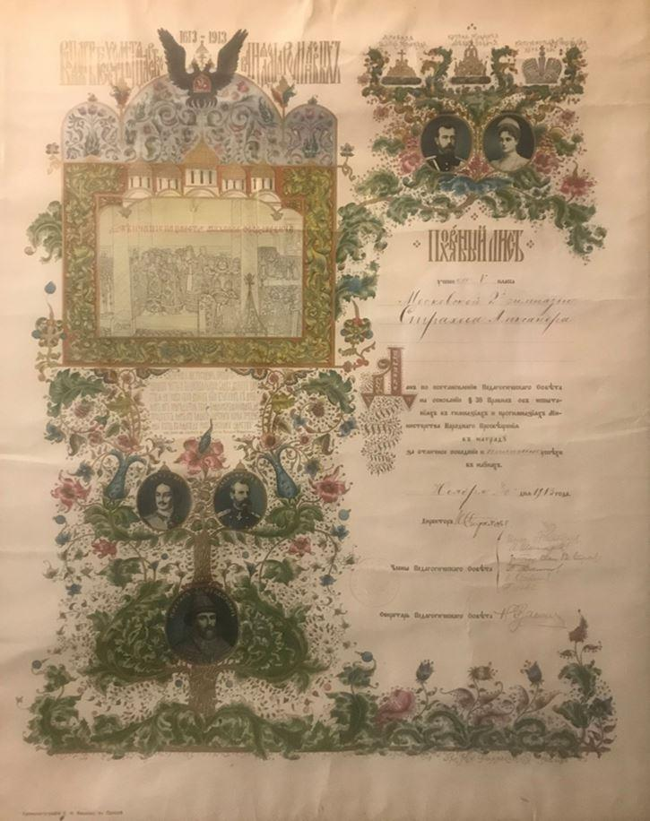
Diplôme commémoratif adressé à A.S. Strakhov en l'honneur du 300e anniversaire de la maison des Romanov.
Ci-dessous L’école militaire Alexandrovskoe
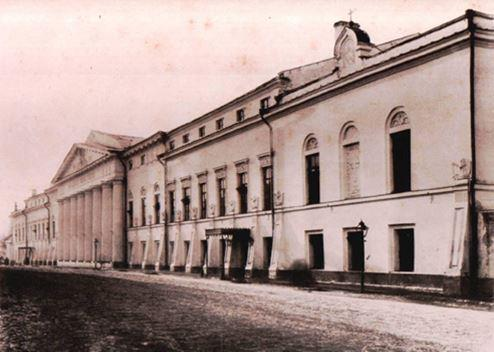1916 est la troisième année de la Première Guerre mondiale. Poussé par des sentiments patriotiques, Alexander Strakhov est diplômé des cours accélérés de l'école militaire Alexandrovskoe (AVU). C'est à partir de 1916 qu'il est permis d'admettre les jeunes bacheliers qui ont obtenu leur diplôme avec mention dans cet établissement d'enseignement militaire, quelle que soit leur classe.
En tant que fils d'un prêtre et de personnel noble (ayant reçu la noblesse par rang alors qu'il était encore dans la fonction publique), A.S. Strakhov détenait le statut de citoyen d'honneur héréditaire.
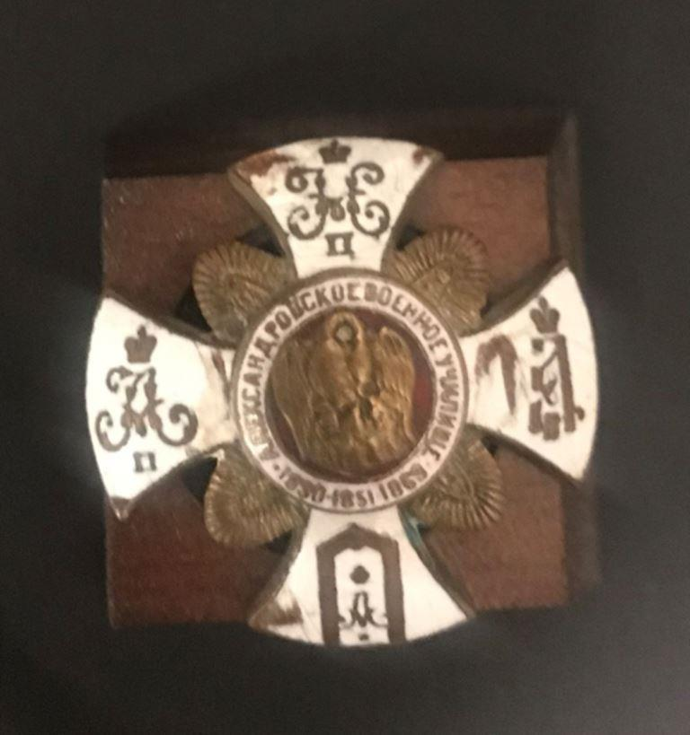Étonnamment, la famille a conservé l’insigne de l’AVU d’ A.S. Strakhov. Il a ainsi été préservé pendant les années de répression de masse, alors que beaucoup de gens détruisaient de telles reliques pour ne pas les compromettre.
De l' AVU, dont il est diplômé dans la catégorie 1, Alexander Strakhov a obtenu le grade d'adjudant dans le 84e régiment de réserve d'infanterie. Ce régiment a été créé lors de la mobilisation de 1914 au 11th Phanagoria Grenadier Regiment, qui faisait partie de la 11th Infantry Brigade du district militaire de Moscou et a combattu dans le cadre de la 3rd Grenadier Division sur le front sud-ouest.
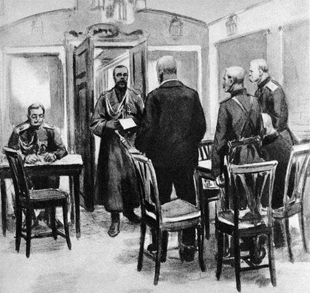En février 1917, la Révolution a commencé en Russie. Le 2 mars, l'empereur Nicolas II abdique le trône pour lui-même et pour l'héritier du tsarévitch Alexy Nikolaevich au profit du frère du grand-duc Mikhail Alexandrovich, qui a reporté le 3 mars l'adoption du pouvoir suprême jusqu'à la décision de l'Assemblée constituante sur la forme du gouvernement. La direction du pays passe alors au Gouvernement Provisoire. Après ces événements, il y a eu un effondrement régulier et inévitable de la vie étatique et de l'armée.
Après un certain temps, Alexander est diagnostiqué avec des maladies graves. À l'été 1917, il arrive à Gagra pour se faire soigner et reste chez un parent Ivan Petrovich Makarov, chef du district de Gagra (puis commissaire du Gouvernement Provisoire du district de Gagra).
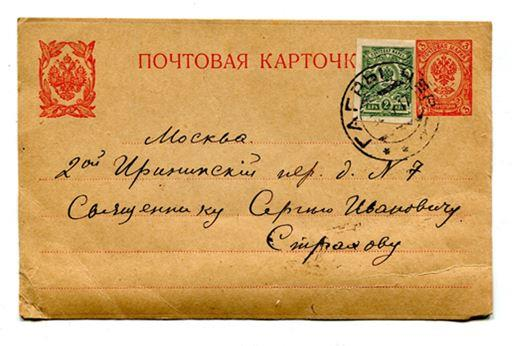 Lettre d’Alexander à son pèreLe père Sergueï tente de savoir comment son fils peut obtenir un billet de train via la Croix-Rouge pour se rendre à Moscou, mais, en même temps, dans ses lettres, il lui conseille de ne pas se précipiter. Il a clairement vu que la situation dans l'armée était catastrophique et préfère que son fils retourne au service militaire physiquement plus fort.
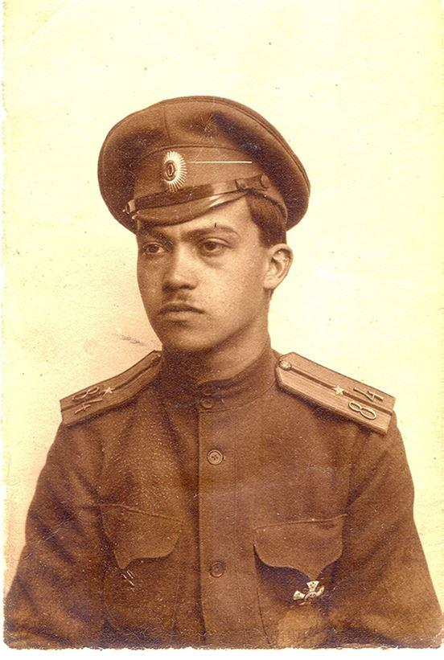À Gagra, il dit à ses cousins Vera Semyonovna Makarova et à sa sœur Alexandra qu'il a l'intention de rejoindre l'armée blanche. On ne sait toutefois pas comment et à quel moment cela s'est produit. La famille ne savait d’ailleurs pas avec certitude ce qui lui était arrivé. Les informations n'ont été conservées qu’oralement et non vérifiées. En 1919, il est porté disparu. Quelqu'un rapporte qu'ils avaient été vu malade et presque mourant en Crimée. Une rumeur circule plus tard selon laquelle il serait mort dans un camp.
Toutefois la famille espère encore qu'Alexandre a pu être évacué à l'étranger lorsque les Blancs ont quitté la Crimée en novembre 1920, ou se cache quelque part dans sa Patrie. Même s'il est en prison, il est vivant et apparaîtra tôt ou tard chez lui.
En 1927, un homme qui a servi comme gardien dans l'un des camps et est retourné à Moscou, a déclaré qu'il avait entendu parler d'Alexandre Strakhov. Mais s’agissait-il bien de lui ou d’un homonyme ? Ce n'était pas clair. Les proches voulaient pourtant continuer de croire au meilleur ...
Le père Sergueï Strakhov s'est occupé des affaires de son fils et n’a pas permis qu’elles soient vendues dans les moments difficiles de la famine, en disant: « Sanya reviendra. »
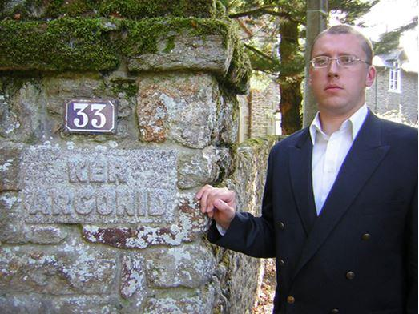Lorsqu'en 1997 j'ai commencé à travailler dans les archives de la famille impériale à la Villa Ker Argonides à Saint Briac (France) et que j'ai parcouru les listes des grades de l'Armée impériale et du Corps naval et d'autres organisations militaires de la diaspora russe et le dépôt de diverses publications émigrées, j'ai eu une lueur d'espoir, celle que le nom du grand-père d'Alexandre se trouve parmi les noms des exilés.
Mon cœur s’est mis à battre plus fort lorsque, dans l'un des magazines, j'ai vu le nom et les initiales de A.S. Strakhov. J'ai continué à lire : Alexandre Sergeevich Strakhov ! L'année de naissance n'est pas 1897, mais 1898. Mais cela ne veut toujours rien dire - parfois les années n'étaient pas indiquées précisément ; à une fin ou à une autre, les personnes ont ajouté ou soustrait des années ; et il peut simplement y avoir une faute de frappe. A-t-il réussi à s'échapper et à partir à l'étranger ? Peut-être qu'il y a des parents ? Je fais défiler les pages avec des informations plus complètes et je vois que, hélas, les correspondances se terminent sur le nom. À partir d'une note dans ce magazine, puis d'autres publications, il a été établi : l'homonyme complet de mon grand-père était en réalité un marin. Autrement dit, nous parlions clairement d'une autre personne. Le fil s'est cassé immédiatement.
Grand-mère Nadya - la dernière de la génération de Strakhov - est décédée les 18/31 juillet 2001 à la 97e année de sa vie, sans jamais savoir ce qui est arrivé à son frère aîné bien-aimé Sanya.
En 2013, j'ai cherché dans l’Internet des publications sur la terreur de la guerre civile. Dans l'un d'eux, tout à fait par hasard, j'ai vu le nom et de brèves informations sur les listes des exécutés par les Rouges à Simferopol : Strakhov Alexandre Serguéévich, né en 1897, originaire de Moscou, vivait à Simferopol, citoyen d'honneur, lieutenant.
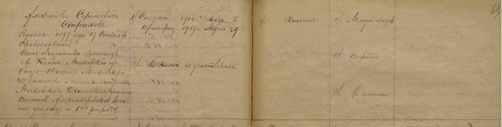C'est déjà une correspondance exacte - nom, année de naissance, lieu de naissance et de résidence au moment de l'arrestation, affiliation à une classe.
Le lieutenant A.S. Strakhov s'est avéré être le n° 168 sur 200 officiers inscrits sur la liste X, exécutés par ordre d'une commission spéciale de première ligne de la Commission extraordinaire panrusse sous le Conseil militaire révolutionnaire de la 4e armée et de la Crimée le 24 novembre 1920.
Ceux qui ont été exécutés à Simferopol appartenaient principalement au nombre de ceux qui ont cru l'appel du commandant du Front Sud de l'Armée rouge des ouvriers et paysans (RKKA) M.V. Frunze sur une amnistie complète pour tous ceux qui déposeraient volontairement leurs armes. Ils sont restés au centre de la Crimée, ne faisant aucune tentative pour atteindre les ports et quitter leur patrie avec l'armée d'évacuation du général baron P.N. Wrangel. Ils ont été avertis qu'ils ne devraient pas compter sur l'honnêteté et la miséricorde des vainqueurs. Ils ont rappelé les atrocités des bolcheviks à la fin de 1917 - début 1918 (lorsque, selon le régime communiste lui-même et l'opinion qui a dominé plus tard dans l'historiographie soviétique pendant de nombreuses années, alors que la guerre civile n'avait même pas commencé). Cependant, apparemment, beaucoup de gens ne voulaient pas voir que la trahison des Rouges pouvait atteindre une telle ampleur.
Il est évident que les membres du mouvement blanc, qui ont pour certains également commis des crimes contre l'humanité, n'étaient ni naïfs ni crédules. Ils ont bien sûr compris que même si, contrairement aux attentes, la politique générale de la direction bolchevique correspondrait à leurs dispositions pacifistes, aux échelons moyens et inférieurs de l'Armée rouge, tout comme pour les organes du parti et du gouvernement soviétique, il y aura certainement ceux qui voudront se venger d'eux et auront l'occasion d'une manière ou d'une autre de réaliser leurs intentions. Ainsi la plupart des cadres Blancs ont d'abord essayé de quitter le pays et, en cas d’échec, se sont cachés profondément.
D'autres Blancs, non résignés à la défaite, se cachaient également mais avaient l'intention de continuer leur participation à la résistance armée antibolchévique, déjà clandestine.
Il y avait ceux qui ne se sentaient pas coupables des atrocités, qui se rendaient compte que le cours de l'Histoire ne leur permettait pas de gagner, et ne voulaient plus verser de sang, même dans un combat loyal, sans parler de certains sabotages et actes terroristes. Ils sont ouvertement restés, puis sont allés se présenter pour un enregistrement fatal.
Ce sont eux - déjà désarmés et sans défense - que les Rouges ont commencé à détruire en masse avec un sadisme triomphant diabolique.
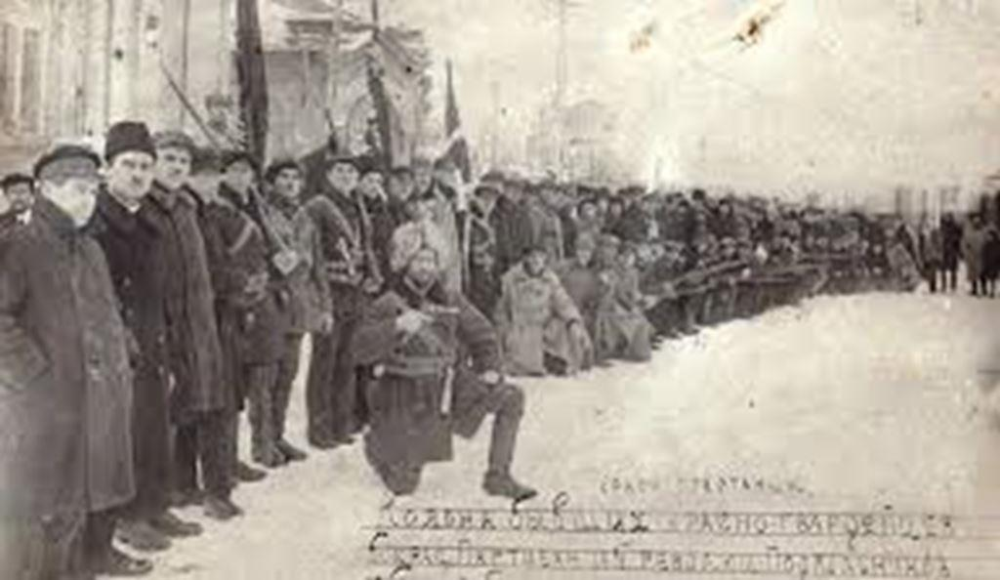Le 12 novembre 1920, des unités de l'Armée Rouge occupent Simferopol. La violence, les vols, les arrestations et les meurtres ont commencé le même jour. Le 17 novembre, le Comité révolutionnaire de Crimée a publié l'ordonnance n° 4 selon laquelle tous les militaires et les grades civils du régime de Wrangel, ainsi que des citoyens russes et des étrangers arrivés en Crimée pendant son gouvernement, étaient soumis à un enregistrement obligatoire. Ils devaient comparaître dans les trois jours. L'amnistie leur était garantie. Et ceux qui ne se sont pas présentés ont été inculpés par le Tribunal révolutionnaire comme des « espions » potentiels.
Durant les premiers jours, il semblait que les Rouges se conformaient aux conditions qu'ils avaient annoncées. Le nombre d'inscriptions a alors augmenté. Quand leur nombre est devenu suffisant, selon de l'avis des nouvelles autorités, une extermination massive a commencé.
L'enquête et le procès étaient de la pure farce. Dans le meilleur des cas, l'enquête a consisté en un questionnaire rempli par les victimes elles-mêmes lors de l'enregistrement et un « verdict ». Souvent, ces condamnations ont été prononcées sans interrogatoire et en l'absence des « accusés ». Aucune preuve d'activité criminelle n'était requise - il suffisait d'avoir un grade et au moins simplement une origine « non prolétarienne ». Dans la colonne « Ce qui est accusé », les tchékistes écrivaient en toute franchise : « lieutenant », « cosaque », « officiel ». Autrement dit, il y a bien eu un génocide, ou plus exactement un stratocide, car tous furent exécutés exécutés non pour des actes, mais pour quelque chose qu'ils n’auraient pu changer même s'ils le voulaient.
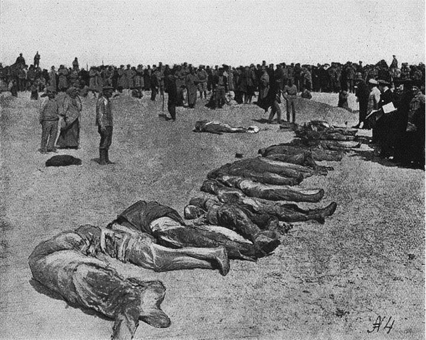Des centaines d'officiers et de fonctionnaires ont été ainsi abattus. Les cadavres ont été enterrés dans des fosses communes creusées par les condamnés eux-mêmes. Puis ils ont arrêté d'enterrer. À la périphérie de Simferopol, la puanteur des corps en décomposition entassés en tas était clairement ressentie.
Selon le témoignage du général de division Hérodion Danilov, qui servait alors dans l'Armée rouge, les cadets de l'école de cavalerie ont été envoyés à un travail terrible : on leur a ordonné de se faire avec des tas avec les couronnes des dents en or des morts. Ils ont par ailleurs ramassé des croix, des alliances, des vêtements plus ou moins décents (quand ceux-ci étaient encore sur les morts).
Il y a eu des cas d'exécutions de parents - mères, épouses et enfants qui ont tenté de se rendre sur les lieux des exécutions et de prendre les corps de leurs fils, maris et pères.
Toutes les prisons étaient pleines. De plus, les bolcheviks ont triplé le camp de concentration sur la rue Pushkinskaya, conçu pour accueillir 800 personnes. Les prisonniers étaient intimidés, affamés, à moitié habillés dans le froid.
Selon des estimations moyennes, pendant la phase aiguë de la terreur rouge en Crimée de novembre 1920 à mai 1921, environ 20 000 personnes ont été exécutées dans le seul petit village de Simferopol. Mais Sébastopol, Yalta, Kertch, Feodossia sont devenus d'autres centres de terreur. Parmi les personnes exécutées, il y avait non seulement des officiers, mais aussi des fonctionnaires, des prêtres, des médecins, des enseignants, des personnalités publiques ... L'écrasante majorité des victimes des organes punitifs du régime communiste totalitaire étaient de simples citoyens honnêtes qui aimaient la Russie et pouvaient lui apporter beaucoup d'avantages.
Aujourd'hui, avec la bénédiction de Sa Sainteté le patriarche Cyrille de Moscou et de toute la Russie et avec la participation de la Maison Impériale russe, on a établi une tradition de commémoration dans la prière de toutes les victimes des troubles, de la Révolution et de la guerre civile.
Les descendants des Blancs et des Rouges viennent à ces services commémoratifs. Certains ont des victimes parmi leurs ancêtres. Chacun a sa propre tradition familiale, ses propres souvenirs, son point de vue sur le passé et le présent. Chacun a le droit inaliénable d'aimer ses ancêtres grâce à qui il est né, de leur souhaiter pardon dans la vie éternelle, de prier pour eux. N'importe qui peut adhérer à ses propres convictions, et l'opinion de personne, aussi raisonnée soit-elle, ne peut être reconnue comme la « vérité unique ». Cependant, nous tous, si nous aimons la Patrie, ne devons pas nourrir un sentiment de vengeance, ne pas espérer une quelconque vengeance, mais, au contraire, essayer de faire tout ce qui est en notre pouvoir pour que le fratricide impie et inhumain ne se reproduise plus dans notre pays.
Dans son discours aux participants du premier service funèbre, "pour tous ceux qui ont été tués en temps de troubles et ceux qui sont morts en exil", servi le 4 novembre 2009, le Chef de la Maison Impériale russe, la Grande-Duchesse Maria Vladimirovna a écrit: "Le principal résultat et la leçon du siècle tragique passé pour nous est le suivant : nous devons prendre conscience qu'aucun but ne peut être une excuse pour la colère impie et inhumaine, l'extermination mutuelle, la haine et la calomnie. Chacune des parties aux grands troubles du XXe siècle avait sa propre vérité et ses propres mensonges, ses propres idéaux et son propre intérêt, ses propres héros et ses propres tortionnaires.
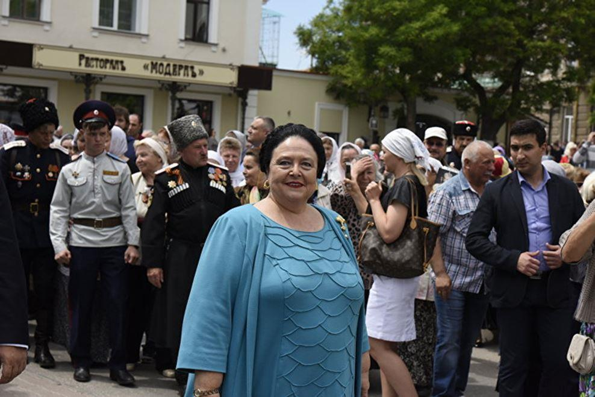Mais, en réalité, tout le monde a souffert de la révolution - aussi bien les vaincus que les vainqueurs. Les bourreaux d'hier sont devenus des victimes le lendemain, et beaucoup de ceux qui ont survécu et ont même apparemment gagné le pouvoir et la prospérité ont été martyrisés spirituellement et moralement. Nous ne devons rien oublier pour ne pas répéter les erreurs. Nous devons essayer de corriger le mal. Mais nous devons aussi être capables de pardonner et cultiver le pardon. Pour le bien des générations futures, nous devons apprendre à trouver, dans le passé comme dans le présent, non ce qui sépare mais d’abord ce qui nous rapproche les uns des autres".
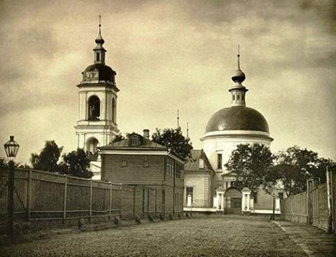L’église de la Sainte Trinité à Khokhlovka, où Alexandre Strakhov a passé son enfance, et celle de Sainte Irina le Grand Martyr à Pokrovskoye, d'où il est allé à la guerre, comme des milliers d'autres églises profanées et mutilées par les combattants ont maintenant été renvoyées à l'Église orthodoxe russe.
La Liturgie y est à nouveau célébrée. Et nous avons le droit d'espérer que le Seigneur ne quittera pas la Russie à l'avenir par les prières des Saints Nouveaux Martyrs et Confesseurs, glorifiés par la Sainte Église, et de ceux qui ne sont pas entrés dans leur hôte, mais ont également donné leur vie pour la Foi et les valeurs spirituelles historiques de la Terre de Russie.
11/24 novembre 2020, le jour du 100ème anniversaire de l'exécution du lieutenant A.S. Strakhov, dans l'église de Moscou du Saint Grand Martyr Irina dans le Pokrovsky avec la bénédiction du recteur, l'archevêque Démétrius de Vitebsk et Orsha, Hiéromonk Serapion (Senkevich) a effectué un service funèbre pour Alexandre.
Le frère d'Alexandre Strakhov, ingénieur et monarchiste russe Ivan Serguéévich Strakhov (1899-1995), participant au soulèvement anti-bolchevique des cadets à Moscou en 1917, décédé dans la ville de Voskresensk il y a 25 ans, le 27 novembre 1995, a également été commémoré au service funèbre; leurs parents sont l'archiprêtre Sergius et Evdokia et d'autres ancêtres.
2. Страхов Сергей Иванович - прот., церк. Троицы Живоначальной в Покровском г. Москва, 45 л., Вифан. дух. сем.: ЦИАМ, ф. 2126, д. 1034, 1912 г., послужной список, лл. 5об.-7; ф. 2303, д. 306, 1919 г., наградной список, л. 2об.; ЦАГМ, ф. 1215, оп. 2, д. 81, 1925 г., список, л. 77; Волобуева Т. И., Кузнецова О. П., Романова С. Н., Савостьянова Н. Ю., Столярова З. Н. Священно-церковнослужители и ктиторы Московской епархии первой трети ХХ столетия. Тверь, 2013, с. 325
3. В Клинском уезде, в селе Поджигородово (храм Св. Михаила Архангела) служил его дед священник Иоанн Сергеевич Страхов, и семья о. Сергия Страхова там нередко гостила; см. Дубинский А.Ю. Вифанская духовная семинария. Алфавитный список выпускников 1881-1900 годов (краткий генеалогический справочник). – М., 2002. – 70 с. – С. 53
4. Болезнь Аддисона – редкое заболевание эндокринной системы
5. Страхова, Леонилла Ивановна. Микрометод для диагноза дифтерии / Л. И. Страхова, Е. Е. Ган (Москва) ; Из Эпидемиол. отд.... Ин-та инфекционных болезней им. И. И. Мечникова. - [Ленинград] : Ленингр. коммун. типо-лит., [1926]. - 4 с.; 18 см.
6. РГВИА, Ф. № 408, Списки по старшинству генералов, штаб- и обер-офицеров. Коллекция. Оп. 1; Д. № 16518, Список по старшинству в чинах и офицеров 84-го пехотного запасного полкаhttps://gwar.mil.ru/documents/view/?id=88008222&backurl=person%5C84-%D0%B9%20%D0%BF%D0%B5%D1%85%D0%BE%D1%82%D0%BD%D1%8B%D0%B9::group%5Copisdoc:chasti:lk:mat:proch::types%5Crlt_documents:book_area:prikazi_raspor:donesenie:reports_materials:svedenia:awards:predstavlenie_nagrad:perepiska_awrd:instruction:docs_chats:personal_data:list_awards:lists_awards:warlist_documents:cards_voennoplenn:docslk_documents:name_poter:alboms:maps_schemes:diplomat_docs:permid_docs:docs_english:report_info_card:upper_command:newsjourn_documents:other_docs:burial_docs::page%5C3
7. РГВИА Ф. 7816, 544 ед. хр., крайние даты: 1901 – 1918 гг.
8. Мартиролог русской военно-морской эмиграции по изданиям 1920 - 2000 гг. / Ред.: В.В. Лобыцын: Сост.: И.М. Алабин, В.В. Лобыцын, А.Ю. Савинов, К.Б.Стрельбицкий. Москва: Феодосия, 2001. - 192 с.; Волков С. В. Офицеры флота и морского ведомства: Опыт мартиролога. — М.: Русский путь, 2004. — 560 с. Тираж 2000 экз. ISBN 5-85887-201-8
9. ЦГАООУ, № 71478 фп. 1 Там же, № 70777 фп. 3 Там же, № 7191 фп. (ЦДАГО); Абраменко Л. М. Последняя обитель. Крым, 1920–1921 годы. — Киев: Межрегиональная Академия управления персоналом, 2005. — 480 с: ил. – С. 258-266 — Тираж 1000 экз. — ISBN 966–608–424–4 ; Реабилитированные историей. Автономная Республика Крым. Книга шестая. – Симферополь: Антиква, 2009. – 248 с. – С. 59
10. Данилов И. Воспоминания о моей подневольной службе у большевиков // Архив русской революции, т.XVI,Берлин, 1925. – с. 166
11. Обращение главы дома Романовых по случаю празднования Дня Народного Единства и служения в этот день в московском храме Иконы Божией Матери «Знамение»в Романовом переулке панихиды по всем жертвам революции и Гражданской войны, 4 ноября 2009 г. http://www.imperialhouse.ru/rus/allnews/news/1374.html (дата обращения: 15 апреля 2017 г.)
12. Закатов А.Н. Жизнь монархиста в СССР. Судьба русского инженера И.С. Страхова https://proza.ru/2020/11/26/104
Partager cette page